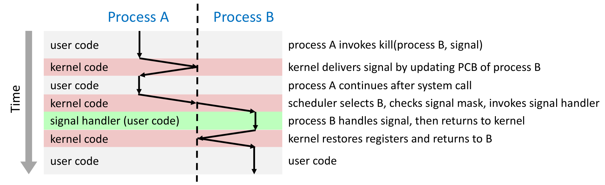
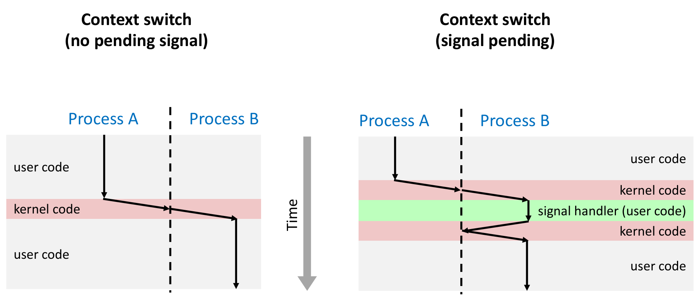
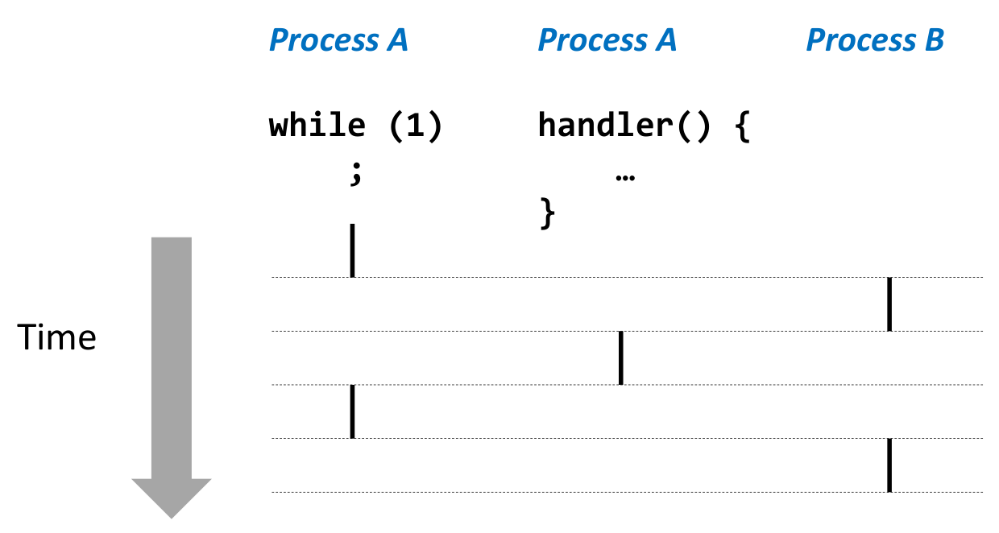
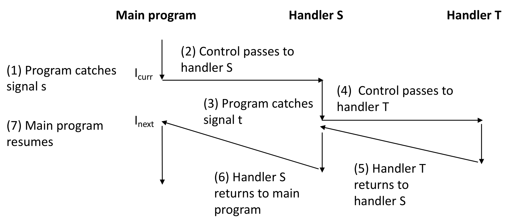
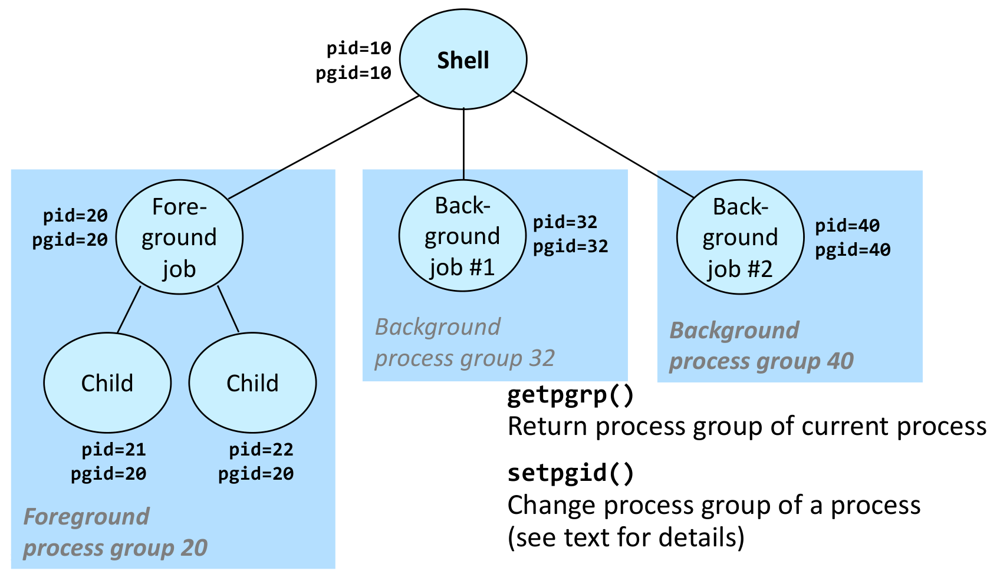
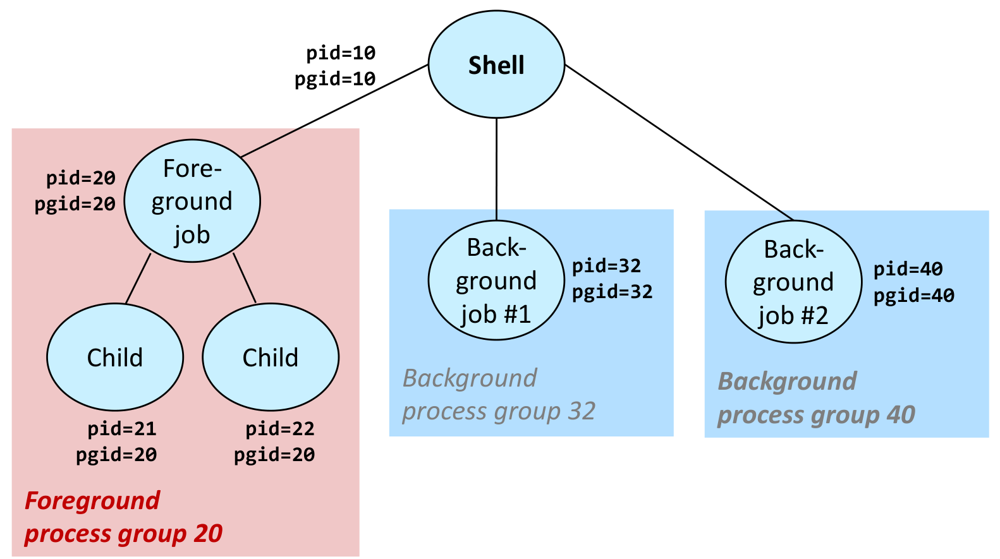
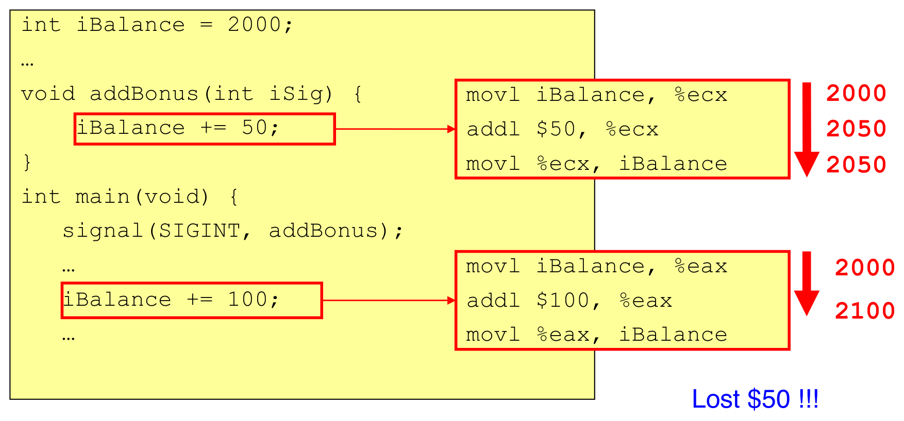

본 포스트는 서울대학교 컴퓨터공학부 시스템 프로그래밍(System Programming, M1522.000800, Fall 2026) 강의 자료 중 15강 — Process Management: Exceptional Control Flow II (PDF 58쪽)를 바탕으로, 강의를 처음 듣는 독자도 논리적 흐름을 따라갈 수 있도록 재구성한 것입니다. 이 강의는 14강(Exceptional Control Flow I)이 다룬 저수준 예외적 제어 흐름(예외와 인터럽트)에 이어, 그 위에 운영체제가 소프트웨어로 세운 고수준 예외적 제어 흐름인 시그널(signal)을 다룹니다. 원본 슬라이드는 영문으로 작성되어 있고, 본문의 대섹션은 강의 첫머리의 개요 슬라이드(Signal Overview → Signal Concepts → Signal API → Signal Handling Issues → Comparison of Exceptional Control Flow → Summary)를 따릅니다. 슬라이드 번호는 61번까지 매겨져 있지만 52–54번(경쟁 조건을 보여 주는 다른 예제)은 숨김 처리되어 PDF에 실리지 않았으므로 이 포스트도 다루지 않습니다. 시그널 표에 대해서는 슬라이드가 교재 Bryant & O’Hallaron, Computer Systems: A Programmer’s Perspective (3rd ed.)의 그림 8.26을 직접 가리키며, 강의 내용 대부분이 같은 책 8.5절(Signals)에 대응합니다. 슬라이드 코드는 그대로 옮기되 생략 표시
…는// …주석으로 바꾸었고, 그대로는 컴파일되지 않는 곳과 슬라이드끼리 어긋나는 곳은 해당 위치에 그 사실을 밝혔습니다.
한 줄 요약 (TL;DR)
“시그널은 커널이 프로세스에게 ’어떤 종류의 사건이 일어났다’는 사실 하나만 알리는 소프트웨어 수준의 예외적 제어 흐름이며, 전달(받는 쪽 PCB의 비트 하나를 켜기)과 수신(그 프로세스로 돌아가기 직전에 비트를 보고 동작을 실행하기)이 분리되어 있다는 데서 그 성질과 함정이 모두 나옵니다.”
시그널마다 종료 · 무시 · 정지 · 계속 중 하나의 기본 동작이 정해져 있고, 프로세스는
sigaction으로 핸들러를 등록해 시그널을 잡거나,sigprocmask로 차단하거나, 무시할 수 있습니다(SIGKILL과 SIGSTOP은 예외). 커널은 시그널을 전달할 때 받는 프로세스의 PCB에 대기 중(pending) 표시를 해 두었다가, 그 프로세스로 돌아가기 직전에 대기 중이면서 차단되지 않은 시그널을 골라 동작을 실행합니다. 대기 표시가 종류마다 비트 하나뿐이므로 시그널은 큐에 쌓이지 않고, 그래서 SIGCHLD 핸들러는waitpid(-1, …, WNOHANG)을 반복해 끝난 자식을 모두 수확해야 합니다. 핸들러는 메인 프로그램과 동시에 실행되는 별개의 논리적 흐름이어서 시스템 호출을 끊어EINTR을 일으키고(재시도 루프나SA_RESTART로 해결), 전역 변수를 두고 경쟁 조건을 만듭니다. 그래서 핸들러는 단순하게 짜고, 비동기 시그널 안전 함수만 부르고,errno를 보존하고, 공유 자료를 건드리는 동안 시그널을 차단하고, 플래그는volatile sig_atomic_t로 선언해야 합니다.
1. 예외적 제어 흐름 (Exceptional Control Flow)
1.1 두 부분으로 나뉜 강의 (Part I · Part II)
예외적 제어 흐름(exceptional control flow, ECF) 강의는 두 부분으로 나뉘어 있습니다.
| 부분 | 주제 | 강의 |
|---|---|---|
| Part I | 기본 개념, 저수준 ECF(인터럽트) | 14강 |
| Part II | 고수준 ECF(시그널) | 15강(이번 강의) |
- 슬라이드는 Part I을 회색으로 흐리게 처리해 이번 강의가 Part II임을 표시합니다.
- 저수준 ECF는 하드웨어와 커널 사이에서 일어납니다. 명령을 실행하다 일부러(소프트웨어 인터럽트, 예: 시스템 호출) 또는 오류로 예외가 일어나거나 장치가 인터럽트를 걸면, 프로세서가 그 자리에서 곧바로 커널의 핸들러로 제어를 넘깁니다.
- 고수준 ECF인 시그널은 그 위에 커널이 소프트웨어로 세운 장치로, 사건을 사용자 프로세스에게 알립니다. 두 수준의 차이는 6장에서 비교 슬라이드를 표 하나로 정리합니다.
1.2 이번 강의의 구성 (Lecture Overview)
개요 슬라이드는 Part II에서 다룰 여섯 항목을 나열하며, 이 항목들이 차례로 이 포스트의 2–7장이 됩니다.
- Signal Overview — 시그널 개요
- Signal Concepts — 시그널의 개념
- Signal API — 시그널 API
- Signal Handling Issues — 시그널 처리의 문제들
- Comparison of Exceptional Control Flow — 예외적 제어 흐름의 비교
- Summary — 요약
2. 고수준 메커니즘: 시그널 개요 (High-level Mechanisms: Signal Overview)
2.1 시그널이란 무엇인가 (Signals)
시그널(signal)은 시스템에서 어떤 종류의 사건(event)이 일어났음을 프로세스에게 알리는 메커니즘입니다.
- 예외적 제어 흐름의 고수준 형태입니다. 14강의 예외 · 인터럽트와 비슷하지만 하드웨어가 아니라 소프트웨어 수준에서 일어납니다. 인터럽트가 사건을 커널에 알린다면, 시그널은 사건을 사용자 프로세스에 알립니다.
- 시그널의 종류는 작은 정수 하나로 나타냅니다.
- 대부분의 시스템에서 1–31번입니다(
man 7 signal참조). 리눅스에는 이와 별도로 실시간 시그널(SIGRTMIN–SIGRTMAX)이 있지만, 이 강의가 다루는 것은 1–31번의 표준 시그널입니다. - 시그널이 전하는 정보는 그 종류와, 도착했다는 사실뿐입니다. 특히 같은 종류가 몇 번 왔는지는 남지 않습니다. 이 성질이 3.3절의 “시그널은 큐에 쌓이지 않는다”와 5장의 첫 번째 문제로 이어집니다.
- 대부분의 시스템에서 1–31번입니다(
2.2 시그널의 종류 (Signals: Different signals correspond to different events)
시그널마다 서로 다른 사건이 대응합니다. 슬라이드의 표는 다음과 같습니다.
| 번호 | 이름 | 기본 동작 | 사건 |
|---|---|---|---|
| 1 | SIGHUP |
종료 | 터미널 회선이 끊김(hangup) |
| 2 | SIGINT |
종료 | 키보드에서 인터럽트(Ctrl-C) |
| 3 | SIGQUIT |
종료 | 키보드에서 종료 요청(Ctrl-\) |
| 4 | SIGILL |
종료 | 잘못된 명령(illegal instruction) |
| 9 | SIGKILL* |
종료 | 프로그램을 죽임 |
| 11 | SIGSEGV |
종료 + 코어 덤프 | 세그멘테이션 폴트(잘못된 메모리 참조) |
| 14 | SIGALRM |
종료 | alarm() 타이머 시그널 |
| 15 | SIGTERM |
종료 | 소프트웨어 종료 시그널 |
| 17 | SIGCHLD |
무시 | 자식 프로세스가 정지하거나 종료함 |
| 18 | SIGCONT |
무시 | 정지된 프로세스를 계속 실행 |
| 19 | SIGSTOP* |
정지 | 프로세스를 정지 |
*표가 붙은 SIGKILL과 SIGSTOP은 잡을 수도, 차단할 수도, 무시할 수도 없습니다. 어떤 프로그램이든 반드시 끝내거나 멈출 수 있는 수단이 시스템에 남아 있어야 하기 때문입니다.- 코어 덤프(core dump)는 종료 순간 프로세스의 메모리 이미지를 파일로 남겨, 나중에 디버거로 죽은 원인을 살펴볼 수 있게 하는 것입니다.
- 전체 목록은
man 7 signal과 교재 그림 8.26에 있습니다. 4.4절에 나오는SIGTSTP(Ctrl-Z)는 표에 없지만 x86 리눅스에서 20번이고 기본 동작은 정지입니다.
- 번호. 표의 17–19번은 x86 · ARM 리눅스의 번호입니다. macOS 같은 BSD 계열에서는
SIGSTOP이 17,SIGTSTP가 18,SIGCONT가 19,SIGCHLD가 20번입니다. 프로그램에서 번호 대신SIGCHLD같은 이름(매크로)을 써야 하는 이유입니다. - 기본 동작. 표는 교재를 따라
SIGQUIT과SIGILL을 “종료”로 적지만, 리눅스의man 7 signal은 둘 다SIGSEGV처럼 코어 덤프를 남기는 종료(Core)로 분류합니다. SIGCONT의 “무시”는 실행 중인 프로세스에는 (대기 중인 정지 시그널을 지우는 것 말고는) 아무 영향이 없다는 뜻입니다. 정지된 프로세스는 이 시그널이 보내지는 순간(이 강의의 전달) 커널이 다시 실행시키며,SIGCONT를 차단하거나 무시하고 있어도 마찬가지입니다.
3. 시그널의 개념 (Signal Concepts)
3.1 시그널 처리 방식 (Signal Handling)
커널은 시그널마다 받는 프로세스가 취할 기본 동작(default action)을 정해 둡니다.
| 기본 동작 | 커널이 하는 일 |
|---|---|
| 종료 / 코어(terminate / core) | 프로세스를 끝냅니다(코어 덤프를 남기기도 합니다) |
| 무시(ignore) | 시그널을 조용히 버립니다 |
| 정지 / 계속(stop / continue) | 프로세스를 멈추거나 다시 실행합니다 |
프로세스는 시그널에 어떻게 반응할지를 프로그램으로 정할 수 있습니다.
| 반응 | 의미 | 설정 수단(4장) |
|---|---|---|
| 잡기(catching) | 사용자가 정의한 시그널 핸들러(signal handler)를 실행합니다 | sigaction, signal |
| 차단(blocking) | 차단을 풀 때까지 시그널의 수신을 미룹니다 | sigprocmask |
| 무시(ignoring) | 시그널을 버립니다 | 핸들러 자리에 SIG_IGN |
| 기본 동작 | 위 표의 동작을 따릅니다 | 핸들러 자리에 SIG_DFL |
- 앞 절대로 SIGKILL과 SIGSTOP은 잡기 · 차단 · 무시가 모두 불가능하고, 언제나 기본 동작을 따릅니다.
- 차단과 무시는 다릅니다. 무시한 시그널은 버려지지만, 차단한 시그널은 사라지지 않습니다. 차단된 동안 도착한 시그널은 대기 중(pending)으로 남아 있다가, 차단을 푸는 순간 수신됩니다. “지금은 받지 않겠다”(차단)와 “앞으로도 받지 않겠다”(무시)의 차이이며, 4.12절의
block.c출력에서 그대로 확인할 수 있습니다.
3.2 시그널의 출처 (Signal Sources)
시그널은 커널이 만들거나, 프로그램의 요청으로 만들어집니다.
- 커널 안에서 일어난 사건의 결과로. 예를 들어 잘못된 메모리 접근은 다음 순서로 시그널이 됩니다.
- 프로세스가 잘못된 메모리 주소에 접근합니다.
- MMU가 저수준 예외인 #PF(페이지 폴트)를 일으킵니다.
- 커널의 예외 핸들러가 프로세스에 SIGSEGV(세그멘테이션 폴트)를 보냅니다.
- 프로그램이 요청해서. 시스템 호출
int kill(pid_t, int sig)를 씁니다(4.5절).- 보내는 프로세스는 받는 프로세스와 사용자 ID가 같거나 특권(privileged)을 가져야 합니다. 다른 사용자의 프로세스를 마음대로 죽일 수 없게 하는 장치입니다.
- 터미널에서.
- 키보드: Ctrl-C, Ctrl-Z(4.4절)
/bin/kill,/usr/bin/killall: 임의의 시그널을 보내는 프로그램(4.2절)
첫 번째 경로는 두 수준의 ECF가 어떻게 이어지는지 보여 줍니다. 14강의 저수준 예외(페이지 폴트)를 커널이 먼저 처리하고, 그 결과를 고수준 ECF인 시그널로 바꾸어 사용자 프로세스에게 알립니다. 잘못된 포인터를 따라간 프로그램이 “Segmentation fault”를 남기고 죽는 것은 SIGSEGV의 기본 동작이 종료이기 때문입니다.
3.3 시그널의 전달과 수신 (Signal Delivery and Reception)
이 강의는 시그널이 프로세스에 닿는 과정을 두 단계로 나누어 부릅니다.
- 전달(delivery): 커널이 받는 프로세스의 PCB(process control block) 안에 있는 시그널 상태를 갱신하는 것입니다.
- 대기 중인 시그널(pending signal): 전달되었지만 아직 수신되지 않은 시그널입니다. 한 종류당 대기 중인 시그널은 최대 하나입니다. 다시 말해 시그널은 큐에 쌓이지 않습니다(signals are not queued).
- 수신(reception): 나중에 커널이 그 시그널 상태를 확인하고 선택된 동작을 실행하는 것입니다.
- 슬라이드는 이 정의 아래에 “수신은 전달과 비동기다(Signal reception is asynchronous to delivery!)”라고 강조합니다. 전달은 시그널이 생기는 순간(
kill호출, 커널의 예외 처리, 터미널 입력 등)에 일어나지만, 수신은 받는 쪽이 다시 실행될 때까지 미뤄집니다. 그 사이에 무슨 일이 일어날지는 스케줄러에 달려 있습니다. - “최대 하나”는 대기 중인 시그널이 종류마다 켜고 끄는 표시 하나로 기록되기 때문입니다(3.7절). 같은 종류의 시그널이 수신되기 전에 두 번 전달되면 두 번째는 이미 켜진 표시를 다시 켤 뿐이므로 흔적이 남지 않습니다.
같은 영어 단어가 자료마다 다른 단계를 가리킵니다. man 페이지를 읽을 때 특히 헷갈리기 쉽습니다.
| 단계 | 이 강의 | 교재(CS:APP) | POSIX · man 페이지 |
|---|---|---|---|
| PCB의 상태를 갱신 | 전달(deliver) | 보냄(send, deliver) | 생성(generate) |
| 그 사이 | 대기 중(pending) | 대기 중(pending) | 대기 중(pending) |
| 동작을 실행 | 수신(receive) | 받음(receive) | 전달(deliver) |
man 7 signal이 “차단된 시그널은 차단이 풀릴 때까지 전달되지 않는다”고 쓸 때의 “전달”은 이 강의의 수신입니다.
슬라이드도 이 단어를 한 가지 뜻으로만 쓰지는 않습니다. 3.1절의 차단 설명(block delivery until the signal is later unblocked)은 man 페이지와 같은 뜻이어서 이 포스트에서는 “수신을 미룬다”로 옮겼고, 6장의 비교 슬라이드는 delivery를 두 단계 전체를 가리키는 말로 씁니다. 이 포스트의 “전달”과 “수신”은 위 정의를 따릅니다.
3.4 수신은 전달과 비동기다 (Signal Delivery and Reception)
앞 절의 정의를 시간 축 위에 놓으면 다음과 같습니다. 슬라이드는 핵심을 한 줄로 적습니다 — 시그널은 받는 프로세스가 문맥 교환에서 돌아가기 직전에 처리됩니다(immediately before returning from a context switch).

| 띠 | 실행 주체 | 일어나는 일 |
|---|---|---|
| user code | A | A가 kill(B, signal)을 호출합니다 |
| kernel code | 커널 | B의 PCB를 갱신해 시그널을 전달하고 A로 돌아갑니다 |
| user code | A | A는 시스템 호출에서 돌아와 하던 일을 계속합니다 |
| kernel code | 커널 | 스케줄러가 B를 고르고, 시그널 마스크를 확인하고, 시그널 핸들러를 부릅니다 |
| signal handler | B | B가 시그널을 처리(수신)하고 커널로 돌아갑니다 |
| kernel code | 커널 | B의 레지스터를 복원하고 B로 돌아갑니다 |
| user code | B | B가 끊겼던 지점부터 이어서 실행합니다 |
- 핸들러는 B의 문맥에서, 사용자 모드로 실행됩니다. 연두 띠 안에서 핸들러를 실행하는 화살표는 점선 오른쪽, 즉 B의 영역에 있고, 띠 이름도 user code입니다. 커널은 핸들러를 직접 실행하지 않고, B가 사용자 모드로 돌아갈 때 B의 원래 코드 대신 핸들러로 가도록 길을 바꿔 줄 뿐입니다.
- 핸들러가 끝나면 원래 코드로 바로 가지 않고 커널을 한 번 거칩니다. 리눅스에서는 핸들러가 반환하면 시그널 트램펄린(trampoline)을 거쳐
sigreturn계열 시스템 호출(x86-64에서는rt_sigreturn)이 불리도록 되어 있습니다. 시그널을 받기 직전에 보관해 둔 B의 레지스터를 커널이 복원해야 B가 끊긴 지점에서 아무 일 없었다는 듯 이어 갈 수 있기 때문입니다. 5.6절의 경쟁 조건 예제가 이 복원을 전제로 합니다.
다음 슬라이드는 같은 문맥 교환을 대기 중인 시그널이 없을 때와 있을 때로 나누어 비교합니다.

커널은 시그널을 전달할 때 표시를 해 두고(받는 프로세스가 시스템 호출 안에서 잠들어 있으면 깨우기도 합니다), 그 프로세스를 커널 모드에서 사용자 모드로 돌려보낼 때마다 대기 중이면서 차단되지 않은 시그널이 있는지 확인합니다. 문맥 교환을 마치고 돌아갈 때가 대표적이고, 시스템 호출이나 인터럽트 처리를 마치고 돌아갈 때도 마찬가지입니다(3.7절 첫머리의 “프로세스로 돌아가기 전에”). 타이머 인터럽트는 어느 명령과 명령 사이에서든 걸릴 수 있으므로, 받는 프로세스 입장에서는 핸들러가 자기 코드의 어느 두 명령 사이에든 끼어들 수 있습니다. 5장의 문제들이 모두 여기서 나옵니다.
3.5 동시 흐름으로서의 시그널 핸들러 (Signal Handlers as Concurrent Flows)
시그널 핸들러는 메인 프로그램과 동시에(concurrently) 실행되는 별개의 논리적 흐름입니다. 프로세스가 아닙니다.

while (1) ;, 둘째 열은 같은 Process A의 handler() { … }, 셋째 열은 다른 프로세스 Process B이며, 각 열의 굵은 세로 막대가 그 흐름이 CPU를 차지한 구간입니다. 위에서부터 A의 루프, B, A의 핸들러, 다시 A의 루프, 다시 B 순서로 실행됩니다. 둘째 열의 머리글이 Process B가 아니라 Process A라는 점이 핵심입니다. 핸들러는 새 프로세스가 아니라 A 안에서 A의 주소 공간과 전역 변수를 그대로 쓰며 실행되는 또 하나의 흐름이고, A의 루프가 실행되는 기간 사이에 끼어들어 실행되므로 13강의 정의대로 루프와 동시적입니다. 한 순간에 실행되는 막대는 언제나 하나뿐이라는 점도 13강 2.3절의 동시 프로세스 그림과 같습니다.- 13강 2.3절의 정의대로, 두 흐름의 실행 기간이 겹치면 동시적입니다. 핸들러는 메인 루프가 실행되는 기간 한가운데에 끼어들어 실행되므로 메인 루프와 동시적입니다.
- 그러나 핸들러는 별도의 프로세스가 아니므로 주소 공간이 따로 없습니다. 메인 프로그램과 같은 전역 변수와 자료 구조를 공유하며, 이것이 5.6절 경쟁 조건의 뿌리입니다.
3.6 중첩된 시그널 핸들러 (Nested Signal Handlers)
핸들러도 다른 핸들러에 의해 끊길 수 있습니다.

| 단계 | 일어나는 일 |
|---|---|
| (1) | 메인 프로그램이 명령 \(I_{\text{curr}}\)를 실행하던 중 시그널 s를 잡습니다 |
| (2) | 제어가 핸들러 S로 넘어갑니다 |
| (3) | S가 실행되는 도중 시그널 t를 잡습니다 |
| (4) | 제어가 핸들러 T로 넘어갑니다 |
| (5) | T가 끝나 S로 돌아갑니다 |
| (6) | S가 끝나 메인 프로그램으로 돌아갑니다 |
| (7) | 메인 프로그램이 다음 명령 \(I_{\text{next}}\)부터 이어 실행합니다 |
- 그림이 서로 다른 두 시그널 s와 t를 쓰는 데는 이유가 있습니다. 기본 설정에서는 핸들러가 실행되는 동안 그 핸들러의 시그널 자신이 차단되므로, 같은 시그널끼리는 중첩되지 않습니다. 같은 시그널끼리 중첩시키려면 4.9절의
SA_NODEFER플래그가 필요합니다.
3.7 커널 내부: 구현 의사 코드 (Kernel Internals: Implementation Pseudo-Code)
지금까지의 동작을 커널이 어떻게 구현하는지 의사 코드로 보면 다음과 같습니다.
- 프로세스마다 PCB에 비트 마스크 두 개를 둡니다 — 대기 중인 시그널 마스크(
pending)와 차단된 시그널 마스크(blocked). - 프로세스로 돌아가기 전에, 대기 중이지만 차단되지 않은 시그널의 집합을 계산합니다.
- 커널은 그 시그널들을 프로세스에 수신시킨 뒤에야 정상적으로 돌아갑니다.
int pending = 0; // PCB 안: 대기 중인 시그널 (시그널 k = 비트 k)
int blocked = 0; // PCB 안: 차단된 시그널
pnb = pending & ~blocked // 대기 중이면서 차단되지 않은 시그널
while (pnb != 0) {
Choose least nonzero bit k in pnb
Force process p to receive signal k
(receipt of the signal triggers some action by p)
Clear bit k in pnb
}
Return to p- 전달 =
pending의 비트 \(k\)를 켜는 것입니다. 교재(CS:APP 8.5.1절)의 설명대로, 커널은 시그널 \(k\)를 전달할 때pending의 비트 \(k\)를 켜고 수신시킬 때 끕니다. pnb = pending & ~blocked는 비트 연산 그대로입니다.~blocked가 차단되지 않은 시그널의 집합이므로, 이것과pending의 교집합이 “지금 수신시켜야 할 시그널”입니다.- 가장 낮은 비트부터 고르므로, 이 의사 코드에서는 번호가 작은 시그널부터 수신됩니다. 실제로는 POSIX가 여러 표준 시그널이 함께 대기할 때의 수신 순서를 정하지 않으며, 리눅스는 SIGSEGV 같은 동기 시그널을 먼저 고릅니다.
- 의사 코드의
int하나는 32비트이므로 1–31번 시그널이 비트 하나씩을 차지할 수 있습니다. 2.1절의 “대부분의 시스템에서 1–31번”과 맞아떨어집니다(리눅스 커널의 실제 시그널 집합은 64비트라 실시간 시그널까지 담습니다).
예를 들어 SIGINT(2번)와 SIGALRM(14번)이 대기 중인데 SIGINT가 차단되어 있다면 다음과 같습니다.
| SIGALRM (비트 14) | SIGINT (비트 2) | |
|---|---|---|
pending |
1 | 1 |
blocked |
0 | 1 |
pnb = pending & ~blocked |
1 | 0 |
SIGALRM만 수신되고, SIGINT는 pending에 남아 차단이 풀릴 때를 기다립니다. 이 표현 방식에서 3.3절과 3.1절의 두 성질이 곧바로 나옵니다.
- 큐에 쌓이지 않는다. 시그널마다 비트가 하나뿐이므로, 이미 1인 비트를 다시 켜는 두 번째 전달은 아무 흔적도 남기지 않습니다.
- 차단해도 사라지지 않는다. 차단은
blocked의 비트일 뿐이고pending의 비트는 그대로 남으므로, 차단을 푼 뒤 처음으로 프로세스로 돌아갈 때 수신됩니다(4.12절에서 확인합니다).
4. 시그널 API (Signal API)
4.1 API 한눈에 보기 (Signal API)
| 동작 (Operation) | API | 변형 (Variants) | 다루는 절 |
|---|---|---|---|
| 프로세스에 시그널 보내기 (Send signal to process) | int kill(pid_t pid, int sig) |
killpg, tkill, tkillpg |
4.5절 |
| 알람 시그널 요청 (Request alarm signal) | unsigned int alarm(unsigned int seconds) |
4.9절 | |
| 시그널 핸들러 등록 (Register signal handler) | int sigaction(int signum, struct sigaction *act, struct sigaction *oldact) |
4.7절 | |
sighandler_t signal(int signum, sighandler_t handler) |
폐기 예정(deprecated), 피할 것 | 4.8절 | |
| 시그널 차단 · 해제 (Block/unblock signals) | int sigprocmask(int how, sigset_t *set, sigset_t *oldset) |
4.10절 | |
| 차단된 시그널의 상태 확인 (Check status of blocked signals) | int sigpending(sigset_t *set) |
4.11절 |
- 표 위의 설명 문구는 “C standard library functions related to dynamic memory allocation”으로 적혀 있지만, 표의 내용은 시그널 API입니다.
- 변형 칸의
tkillpg는 리눅스 man 페이지나 POSIX에서 찾을 수 없는 이름입니다. 리눅스에서 특정 스레드에 시그널을 보내는 시스템 호출은tkill과tgkill이고, 프로세스 그룹에 보내는 함수는killpg입니다. - 표의 함수들은 3장의 개념에 하나씩 대응합니다.
kill과alarm은 전달을 일으키고(alarm은 정해진 시간 뒤에 커널이 SIGALRM을 전달하게 합니다),sigaction·signal은 수신 때 실행할 동작을 정하며,sigprocmask는blocked마스크를 바꾸고,sigpending은pending마스크 가운데 차단된 부분을 보여 줍니다. signal은 회색 글씨로 적혀 있습니다. 4.8절에서 보듯 시스템마다 의미가 달라 피해야 하는 함수입니다.
4.2 /bin/kill로 시그널 보내기 (Sending Signals with /bin/kill)
/bin/kill프로그램은 임의의 시그널을 프로세스나 프로세스 그룹에 보냅니다.- 프로세스 그룹(process group)은 관련된 프로세스의 집합, 즉 pgrp ID가 같은 프로세스들입니다.
- 예를 들어 셸에서
sort file1 | grep abc | more처럼 파이프라인을 실행하면 세 프로세스가 한 그룹이 됩니다.
- 예
/bin/kill -9 21602— 프로세스 21602에 SIGKILL(9번)을 보냅니다./bin/kill -9 -21602— 프로세스 그룹 21602에 속한 모든 프로세스에 SIGKILL을 보냅니다. 슬라이드는 PID 앞의-를 빨간색으로 강조합니다. 음수 PID는 프로세스 그룹을 뜻합니다.
- 경로까지 적어
/bin/kill이라고 쓰는 것은, 셸(bash)에 같은 이름의 내장 명령kill이 따로 있어서 외부 프로그램임을 분명히 하려는 것입니다.
$ ./pgrp 2
Parent: pid: 21602, pgid: 21602
Child: pid: 21603, pgid: 21602
Child: pid: 21604, pgid: 21602
$ ps -o pid,pgrp,comm
PID PGRP COMMAND
17740 17740 bash
21602 21602 pgrp
21603 21602 pgrp
21604 21602 pgrp
21962 21962 ps
$ /bin/kill -9 21602
$ ps -o pid,pgrp,comm
PID PGRP COMMAND
17740 17740 bash
21603 21602 pgrp
21604 21602 pgrp
22509 22509 ps
$ /bin/kill -9 -21602
$ ps -o pid,pgrp,comm
PID PGRP COMMAND
17740 17740 bash
22685 22685 ps./pgrp 2는 자식 둘을 만들고 각자의 PID와 프로세스 그룹 ID(pgid)를 출력하는 프로그램입니다(코드는 슬라이드에 없습니다). ps -o pid,pgrp,comm은 PID, 프로세스 그룹, 명령 이름만 골라 보여 줍니다.
| 시점 | 그룹 21602에 남은 프로세스 | 설명 |
|---|---|---|
./pgrp 2 직후 |
21602(부모), 21603 · 21604(자식) | 부모의 pgid가 자기 PID와 같으므로 부모가 그룹의 리더이고, 자식은 부모의 그룹을 물려받았습니다 |
/bin/kill -9 21602 뒤 |
21603, 21604 | 부모만 죽었습니다. 리더가 사라져도 그룹 ID 21602는 남은 자식들의 pgid로 그대로 남습니다 |
/bin/kill -9 -21602 뒤 |
없음 | 그룹에 속한 프로세스가 모두 죽었습니다 |
- 부모가 먼저 죽은 두 자식은 13강 5.3절의 고아가 되지만, 그룹 소속은 바뀌지 않습니다. 그래서 그룹 단위의
kill로 한꺼번에 정리할 수 있습니다. - 매번 새로 실행되는
ps(21962 → 22509 → 22685)는 각자 자기 PID와 같은 그룹 ID를 가집니다. 셸이 명령을 실행할 때마다 새 프로세스 그룹을 만들기 때문이며, 다음 절의 주제입니다.bash(17740) 자신도 PID와 같은 그룹 ID를 가진 자기 그룹의 리더입니다.
4.3 프로세스 그룹 (Aside: Process Groups)
- 모든 프로세스는 정확히 하나의 프로세스 그룹에 속합니다.
- 자식 프로세스는 보통 부모와 같은 프로세스 그룹에 속합니다.
fork가 그룹 ID를 물려주기 때문입니다. - 프로세스는
setpgid()를 불러 새 그룹을 만들 수 있습니다.- 같은 파이프라인에 속한 프로세스들은 같은 그룹 ID를 가집니다.
- 자식 프로세스는 보통 부모와 같은 프로세스 그룹에 속합니다.

| 함수 | 하는 일 |
|---|---|
getpgrp() |
현재 프로세스의 프로세스 그룹 ID를 돌려줍니다 |
setpgid() |
프로세스의 프로세스 그룹을 바꿉니다(자세한 내용은 교재) |
- 그림의 작업(job)은 셸에 입력한 명령 줄 하나를 처리하려고 만든 프로세스들입니다. 작업 제어를 하는 대화형 셸은 작업마다 새 프로세스 그룹을 만들고, 보통 그 작업의 첫 프로세스의 PID를 그룹 ID로 씁니다. 앞 절의
pgrp가 자기 PID와 같은 pgid를 가진 이유입니다. - 교재(CS:APP 8.5.2절)에 따르면
setpgid(pid, pgid)에서pid가 0이면 호출한 프로세스 자신을,pgid가 0이면pid가 가리키는 프로세스의 PID를 그룹 ID로 씁니다. 따라서setpgid(0, 0)은 자기 PID를 ID로 하는 새 그룹을 만들고 그 리더가 됩니다. - 포그라운드(foreground) 작업은 지금 터미널 입력을 받는 작업으로 한 번에 최대 하나이고, 백그라운드(background) 작업은
&를 붙여 실행한 작업처럼 터미널을 차지하지 않고 도는 작업으로 여러 개일 수 있습니다.
4.4 키보드로 시그널 보내기 (Sending Signals from the Keyboard)
Ctrl-C(Ctrl-Z)를 누르면 커널이 포그라운드 프로세스 그룹의 모든 프로세스에 SIGINT(SIGTSTP)를 보냅니다.
- SIGINT — 기본 동작은 각 프로세스를 종료하는 것입니다.
- SIGTSTP — 기본 동작은 각 프로세스를 정지(stop, suspend)하는 것입니다.

- 슬라이드는 시그널을 받는 대상을 “포그라운드 프로세스 그룹의 모든 작업(every job)”이라고 적지만, 그림이 보여 주듯 실제로는 그 그룹에 속한 모든 프로세스가 시그널을 받습니다.
- 시그널이 그룹 단위로 가기 때문에
sort file1 | grep abc | more를 실행하다 Ctrl-C를 누르면 세 프로세스가 함께 끝납니다. 반면 셸은 자기 그룹(10)에 있으므로 Ctrl-C에 죽지 않고 다음 명령을 기다립니다. - Ctrl-Z로 정지된 작업은 셸의
fg나bg명령으로 SIGCONT를 받아 다시 실행됩니다.
4.5 kill()로 시그널 보내기 (Sending Signals)
#include <signal.h>
int kill(pid_t pid, int sig);pid |
시그널을 받는 대상 |
|---|---|
> 0 |
PID가 pid인 프로세스 |
0 |
호출한 프로세스와 같은 프로세스 그룹의 모든 프로세스 |
-1 |
시그널을 보낼 권한이 있는 모든 프로세스(리눅스 man 페이지에 따르면 PID 1인 init과 호출한 프로세스 자신은 제외) |
< -1 |
프로세스 그룹 -pid의 모든 프로세스 |
sig |
의미 |
|---|---|
> 0 |
보낼 시그널 |
0 |
전달 시험 — 시그널은 보내지 않고 반환값만 정합니다 |
- 반환값이 0보다 작으면 오류입니다. 자세한 내용은 man 페이지를 보라고 슬라이드는 덧붙입니다.
sig = 0은 “그 PID의 프로세스가 있고, 내가 시그널을 보낼 권한이 있는가”를 시그널 없이 확인하는 용도로 씁니다. 좀비도 있는 것으로 칩니다.- 4.2절의
/bin/kill -9 -21602는kill(-21602, SIGKILL)과 같습니다. pid의 네 경우는 13강 6.1절의waitpid인자 규칙(> 0,-1,0,< -1)과 모양이 같습니다. 다만-1이waitpid에서는 “자식 중 아무나”이고kill에서는 “권한이 있는 모든 프로세스”라는 점이 다릅니다.
4.6 kill() 예제: 자식 절반에게 SIGINT 보내기 (Sending Signals with the kill Function)
슬라이드의 killer.c는 자식 N개를 만든 뒤 그 절반에게 SIGINT를 보내고, 모두 수확하면서 각자 어떻게 끝났는지 출력합니다.
int main(int argc, char *argv[])
{
pid_t pid[N];
int i, child_status;
for (i=0; i<N; i++) {
if ((pid[i] = fork()) == 0) { // child: sleep for certain amount of time
sleep(i/2);
return 100+i; // 종료 상태 = 100 + 자식 번호
} else { // parent: report
printf("Created process %d\n", pid[i]);
}
}
for (i=0; i<N; i+=2) { // parent: send SIGINT to half of children
printf("Killing process %d\n", pid[i]);
kill(pid[i], SIGINT); // 번호가 짝수인 자식(i = 0, 2, …)에게만 SIGINT
}
for (i=0; i<N; i++) { // parent: wait for children to terminate
pid_t wpid = wait(&child_status);
if (WIFEXITED(child_status)) {
printf("Child %d terminated with exit status %d\n", wpid, WEXITSTATUS(child_status));
} else {
printf("Child %d terminated abnormally\n", wpid);
}
}
}$ ./killer
Created process 39599
Created process 39600
Created process 39601
Created process 39602
Created process 39603
Created process 39604
Created process 39605
Created process 39606
Created process 39607
Created process 39608
Created process 39609
Created process 39610
Created process 39611
Created process 39612
Created process 39613
Created process 39614
Killing process 39599
Killing process 39601
Killing process 39603
Killing process 39605
Killing process 39607
Killing process 39609
Killing process 39611
Killing process 39613
…
Child 39599 terminated with exit status 100
Child 39600 terminated with exit status 101
Child 39601 terminated abnormally
Child 39605 terminated abnormally
Child 39603 terminated abnormally
Child 39611 terminated abnormally
Child 39613 terminated abnormally
Child 39607 terminated abnormally
Child 39609 terminated abnormally
Child 39602 terminated with exit status 103
Child 39604 terminated with exit status 105
Child 39606 terminated with exit status 107
Child 39608 terminated with exit status 109
Child 39610 terminated with exit status 111
Child 39612 terminated with exit status 113
Child 39614 terminated with exit status 115N의 정의는 슬라이드 코드에 없지만, 출력에서 자식이 16개 만들어지므로 N = 16입니다. 자식 \(i\)의 PID는 \(39599 + i\)로 연속해서 배정되었습니다. 자식 \(i\)는 sleep(i/2)초 동안 자다가 종료 상태 \(100 + i\)로 끝나고, 부모는 번호가 짝수인 자식(\(i = 0, 2, \dots, 14\))에게만 SIGINT를 보냅니다. 자식들은 SIGINT에 핸들러를 등록하지 않았으므로 기본 동작(종료)을 따릅니다.
| 자식 | 받은 시그널 | 끝난 방식 | 출력 |
|---|---|---|---|
| \(i = 0\) (39599) | 보냈지만 이미 끝난 뒤 | sleep(0) 후 곧바로 return 100 |
exit status 100 |
| \(i = 1\) (39600) | 없음 | sleep(0) 후 곧바로 return 101 |
exit status 101 |
| 짝수 \(i = 2, 4, \dots, 14\) | SIGINT | SIGINT의 기본 동작으로 종료 | terminated abnormally (7개) |
| 홀수 \(i = 3, 5, \dots, 15\) | 없음 | sleep(1)–sleep(7) 후 return 100+i |
exit status 103, …, 115 |
- “Killing”은 8번인데 “abnormally”는 7개뿐입니다. 자식 0(39599)은
sleep(0)으로 곧바로 끝나 부모가kill을 부를 때 이미 종료했거나(좀비) 종료하는 중이었습니다. 이런 프로세스에 보낸 시그널은 아무 효과가 없으므로, 부모가wait으로 수확할 때 받은 것은 원래의 종료 상태 100입니다. - 시그널로 죽은 자식은
WIFEXITED가 거짓이므로terminated abnormally로 찍힙니다. 어떤 시그널로 죽었는지까지 알려면 13강 6.1절의WIFSIGNALED·WTERMSIG를 씁니다. - 비정상 종료 7개는 39601, 39605, 39603, …처럼
kill을 보낸 순서와 다르게 수확됩니다. SIGINT를 받은 자식이 실제로 죽는 시점은 각자 스케줄되어 시그널을 처리하는 때에 달려 있고, POSIX는wait이 여러 좀비 가운데 어느 것을 먼저 돌려줄지도 정하지 않기 때문입니다. 반면 홀수 자식들은 1초 간격으로 차례로 깨어나 끝나므로 103, 105, …, 115 순서로 수확됩니다.
4.7 sigaction()으로 시그널 동작 등록하기 (Registering Signal Actions using sigaction())
시그널을 잡을 핸들러를 등록하거나 기본 동작을 지정합니다.
#include <signal.h>
int sigaction(int signum, const struct sigaction *act,
struct sigaction *oldact);signum— 대상 시그널입니다. SIGKILL과 SIGSTOP은 쓸 수 없습니다.act— 새로 등록할 동작을 담은struct sigaction입니다.
| 필드 | 의미 |
|---|---|
void (*sa_handler)(int) |
시그널을 잡을 핸들러 함수. SIG_IGN이면 무시, SIG_DFL이면 기본 동작 |
sigset_t sa_mask |
핸들러가 실행되는 동안 차단할 시그널들 |
int sa_flags |
여러 플래그(중첩 지원 등) |
… |
그 밖의 필드 |
oldact—NULL이 아니면 이전에 등록되어 있던 동작을 돌려받습니다.- 반환값이 0보다 작으면 오류입니다. 자세한 내용은 man 페이지에 있습니다.
- 핸들러가 실행되는 동안에는
sa_mask의 시그널들과 그 핸들러를 부른 시그널 자신이 차단됩니다. 핸들러가 반환하면 원래의 마스크로 돌아갑니다. SA_NODEFER— 핸들러를 부른 시그널 자신을 차단하지 않습니다(sa_mask에 그 시그널을 넣지 않았다면). 같은 시그널이 실행 중인 핸들러를 다시 끊을 수 있게 되므로, 3.6절의 중첩이 같은 시그널끼리도 일어납니다(4.9절).SA_RESTART— 시그널에 끊긴 시스템 호출(interrupted system call) 가운데 일부를 커널이 자동으로 다시 시작하게 합니다(5.4절).- 슬라이드의
…자리에는SA_SIGINFO플래그와 함께 쓰는, 인자를 더 받는 핸들러 필드sa_sigaction등이 있습니다.
4.8 signal()로 등록하기 (Registering Signal Actions with signal())
signal()도 같은 일을 하는 더 간단한 함수입니다.
#include <signal.h>
typedef void (*sighandler_t)(int);
sighandler_t signal(int signum, sighandler_t handler);signum— 대상 시그널입니다. SIGKILL과 SIGSTOP은 쓸 수 없습니다.handler— 호출할 핸들러(시그널 잡기), 또는SIG_IGN(무시),SIG_DFL(기본 동작)입니다.- 슬라이드는 반환형을
int로, 오류를 “0보다 작은 반환값”으로 적고 있습니다. 그러나 4.1절의 표와 man 페이지대로 반환형은sighandler_t이며, 성공하면 이전 핸들러를, 실패하면SIG_ERR를 돌려줍니다. 그래서 4.9절 이후의 예제 코드도signal(...) == SIG_ERR로 오류를 검사합니다. 위 선언은 이에 맞춰 바로잡은 것입니다. - 슬라이드는 man 페이지의 경고도 옮겨 둡니다.
signal()의 동작은 유닉스 버전마다 다르고 리눅스에서도 버전에 따라 달라져 왔으므로, 쓰지 말고sigaction(2)을 쓰라는 것입니다.
man 2 signal에 따르면 signal()로 등록한 핸들러의 의미는 두 갈래입니다.
| System V 의미 | BSD 의미 | |
|---|---|---|
| 핸들러가 호출될 때 | SIG_DFL로 되돌아감(진입하자마자 초기화되어 한 번만 잡힘) |
등록이 유지됨 |
| 핸들러 실행 중 같은 시그널 | 차단되지 않음 | 차단됨 |
| 끊긴 시스템 호출 | 다시 시작하지 않음 | 일부 호출을 다시 시작함(SA_RESTART) |
리눅스의 glibc는 기본적으로 BSD 의미를 주지만, 기능 검사 매크로(_DEFAULT_SOURCE 등)가 정의되지 않는 컴파일 환경(예: gcc -std=c11처럼 엄격한 표준 모드)에서는 System V 의미로 바뀝니다. 같은 코드가 환경에 따라 다르게 동작하는 셈입니다. sigaction은 이 세 가지를 sa_mask와 sa_flags로 명시하므로 이런 모호함이 없습니다. 이 강의의 예제들은 signal()과 sigaction()을 섞어 쓰는데, 출력은 리눅스의 기본 설정, 즉 BSD 의미를 기준으로 읽으면 됩니다.
4.9 등록 예제: 중첩되는 핸들러와 알람 (Registering Signal Actions)
슬라이드의 signal.c는 SIGINT와 SIGALRM에 핸들러를 등록한 뒤, 시그널이 올 때마다 처리하며 기다립니다.
void handler(int sig) {
static int level = 0; // 중첩 깊이 (모든 호출이 공유)
level++;
printf("[nesting level %d] Hohoo, got signal %d\n", level, sig);
sleep(3);
level--;
}
void alarm_hdl(int sig) {
printf("Wake up!\n");
alarm(5); // 다음 알람을 다시 예약
}
int main(int argc, char *argv[]) {
struct sigaction action;
action.sa_handler = handler;
sigemptyset(&action.sa_mask); // allow nested signals
action.sa_flags = SA_RESTART | SA_NODEFER; // restart syscalls if possible
if (sigaction(SIGINT, &action, NULL) < 0) {
perror("Cannot install signal handler"); return EXIT_FAILURE;
}
if (signal(SIGALRM, alarm_hdl) == SIG_ERR) {
perror("Cannot install signal handler"); return EXIT_FAILURE;
}
alarm(5);
while (pause() == -1); // 시그널을 기다리는 무한 루프
return EXIT_SUCCESS;
}슬라이드는 SIGINT를 sigaction으로(파란색), SIGALRM을 signal로(빨간색) 등록해 두 방식을 대비합니다.
alarm(seconds)는seconds초 뒤에 자기 자신에게 SIGALRM이 오도록 예약합니다. 이전 예약은 취소되고, 그 예약의 남은 초를 돌려줍니다. 알람은 한 번만 울리므로alarm_hdl이 매번alarm(5)로 다시 예약해 5초마다Wake up!이 찍힙니다.pause()는 시그널을 잡아 핸들러가 반환할 때까지 잠들며, 깨어나면 언제나-1(errno는EINTR)을 돌려줍니다. 따라서while (pause() == -1);은 시그널을 처리하며 끝없이 기다리는 루프입니다.sa_mask를 비운 것은 SIGINT 핸들러가 실행되는 동안 다른 시그널(예: SIGALRM)을 추가로 차단하지 않는다는 뜻입니다. 같은 SIGINT끼리의 중첩을 가능하게 하는 것은 4.7절의SA_NODEFER입니다.
$ ./signal
Wake up!
Wake up!
Wake up!
^C[nesting level 1] Hohoo, got signal 2
Wake up!
Wake up!
Wake up!
^C[nesting level 1] Hohoo, got signal 2
^C[nesting level 2] Hohoo, got signal 2
^C[nesting level 3] Hohoo, got signal 2
Wake up!
^C[nesting level 1] Hohoo, got signal 2
Wake up!
^C[nesting level 1] Hohoo, got signal 2
Wake up!
^C[nesting level 1] Hohoo, got signal 2
^C[nesting level 2] Hohoo, got signal 2
Wake up!
^C[nesting level 1] Hohoo, got signal 2
Wake up!
^Z
[3]+ Stopped ./signal
$ killall signal| 출력 | 일어난 일 |
|---|---|
Wake up! |
5초마다 SIGALRM이 와서 alarm_hdl이 실행됩니다 |
^C[nesting level 1] … |
Ctrl-C 한 번에 SIGINT(2번) 핸들러가 실행되어 level을 1로 올리고 3초 동안 잡니다 |
level 1, level 2, level 3이 연달아 |
첫 Ctrl-C로 시작된 핸들러가 sleep(3)으로 자는 동안 다시 누르고, 그 중첩된 핸들러가 자는 동안 또 눌렀습니다. SA_NODEFER 때문에 실행 중인 핸들러 위에 같은 핸들러가 다시 쌓여, 공유된 static 변수 level이 중첩 깊이를 셉니다 |
level 1, level 2 |
같은 방식으로 깊이 2까지 쌓였습니다 |
^Z → [3]+ Stopped ./signal |
Ctrl-Z의 SIGTSTP가 기본 동작대로 프로세스를 정지시켰고(4.4절), 셸이 작업 3번이 정지되었다고 알립니다 |
$ killall signal |
이름이 signal인 프로세스에 SIGTERM(시그널을 지정하지 않을 때의 기본값)을 보냅니다. 다만 이 프로세스는 정지된 상태라서, 리눅스에서는 SIGTERM이 대기 중으로 남아 있다가 fg 등으로 SIGCONT를 받아 다시 실행될 때 비로소 종료됩니다. 정지된 채로 곧바로 끝내려면 SIGKILL(killall -9 signal)을 씁니다 |
실행 화면 슬라이드의 제목은 4.6절 슬라이드의 Sending Signals with kill Function이 그대로 남아 있지만, 내용은 signal.c의 실행 결과입니다. 핸들러 안에서 printf를 부르는 것은 출력을 보여 주기 위한 시연용입니다. 5.9절의 지침대로라면 printf는 핸들러에서 부르면 안 되는 함수입니다.
4.10 시그널 차단과 해제 (Blocking/Unblocking Signals)
#include <signal.h>
int sigprocmask(int how, const sigset_t *set,
sigset_t *oldset);how—set을 어떻게 해석할지 정합니다.
how |
의미 | blocked의 변화 |
|---|---|---|
SIG_BLOCK |
set의 시그널을 차단합니다 |
\(\mathit{blocked} \leftarrow \mathit{blocked} \cup \mathit{set}\) |
SIG_UNBLOCK |
set의 시그널의 차단을 풉니다 |
\(\mathit{blocked} \leftarrow \mathit{blocked} \setminus \mathit{set}\) |
SIG_SETMASK |
차단 마스크를 set으로 바꿉니다 |
\(\mathit{blocked} \leftarrow \mathit{set}\) |
set— 차단하거나 풀 시그널의 집합입니다.oldset—NULL이 아니면 이전 집합을 돌려받습니다. 이전 마스크를 받아 두었다가SIG_SETMASK로 되돌리면, 원래 무엇이 차단되어 있었든 정확히 이전 상태로 돌아갈 수 있습니다.- 집합을 다룰 때는
sigsetops함수들을 씁니다 —sigemptyset()(공집합),sigfillset()(모든 시그널),sigaddset()(하나 추가),sigdelset()(하나 제거). - 반환값이 0보다 작으면 오류입니다. 자세한 내용은 man 페이지에 있습니다.
sigprocmask가 바꾸는 것은 3.7절 의사 코드의 blocked 마스크입니다.
4.11 대기 중인 시그널 확인 (Checking for Pending Signals)
대기 중인 시그널 전체의 집합을 돌려받습니다.
#include <signal.h>
int sigpending(sigset_t *set);set— 대기 중인(전달되었지만 수신되지 않은) 시그널의 집합이 담깁니다.- 어떤 시그널이
set에 들었는지는sigsetops의sigismember()로 확인합니다. - 반환값이 0보다 작으면 오류입니다. 자세한 내용은 man 페이지에 있습니다.
슬라이드는 이 함수가 대기 중인 시그널 전체를 돌려준다고 적지만, 더 정확히는 3.7절의 pending 마스크 가운데 blocked에도 들어 있는 부분, 즉 pending & blocked입니다. POSIX가 결과를 “호출한 스레드에 대해 차단되어 있으면서 대기 중인 시그널”로 정의하고, 리눅스 커널도 대기 집합을 blocked 마스크와 AND해서 돌려줍니다. 차단되지 않은 시그널은 어차피 다음 복귀 때 곧바로 수신되므로, 이 함수로 보이는 것은 언제나 차단된 시그널입니다. 4.1절 표가 이 함수를 “차단된 시그널의 상태 확인”이라고 부른 이유입니다.
4.12 차단 · 해제 · 상태 확인 예제 (Signals: Block, Unblock, & Check Status)
슬라이드의 block.c는 SIGINT를 차단했다가 푸는 동안 대기 중인 시그널을 1초마다 찍어, 차단 · 대기 · 수신을 눈으로 보여 줍니다.
void int_hdl(int sig) { printf("Received SIGINT\n"); }
void alarm_hdl(int sig) {
sigset_t set;
char sigset[32];
if (sigpending(&set) >= 0) {
for (int i=1; i<32; i++) sigset[i] = (sigismember(&set, i)) > 0 ? 'P' : '.';
sigset[0] = ' '; sigset[31] = '\0';
printf("Pending signals: %s\n", sigset);
}
alarm(1); // 1초마다 대기 중인 시그널을 출력
}
int main(int argc, char *argv[]) {
sigset_t set;
sigemptyset(&set);
sigaddset(&set, SIGINT); // set = { SIGINT }
if (signal(SIGALRM, alarm_hdl) == SIG_ERR) { perror("Cannot install signal handler"); return EXIT_FAILURE; }
if (signal(SIGINT, int_hdl) == SIG_ERR) { perror("Cannot install signal handler"); return EXIT_FAILURE; }
alarm(1);
struct timespec delay = { .tv_sec = 5, .tv_nsec = 0 };
while ((nanosleep(&delay, &delay) < 0) && (errno == EINTR)); // 끊기면 남은 시간만큼 다시 잔다
if (sigprocmask(SIG_BLOCK, &set, NULL) == 0) printf("SIGINT is now blocked.\n");
delay.tv_sec = 5; delay.tv_nsec = 0;
while ((nanosleep(&delay, &delay) < 0) && (errno == EINTR));
if (sigprocmask(SIG_UNBLOCK, &set, NULL) == 0) printf("SIGINT is now unblocked.\n");
delay.tv_sec = 5; delay.tv_nsec = 0;
while ((nanosleep(&delay, &delay) < 0) && (errno == EINTR));
return EXIT_SUCCESS;
}main은 5초씩 세 번 잠듭니다 — SIGINT를 그대로 둔 5초, 차단한 5초, 다시 푼 5초. 그동안 alarm_hdl이 1초마다 sigpending으로 대기 중인 시그널을 찍습니다.
- 출력 문자열의 \(i\)번째 글자가 시그널 \(i\)의 상태로,
P는 대기 중,.은 아님을 뜻합니다.sigset[0]은 공백이고sigset[31]은 문자열 끝'\0'이므로, 화면에는 형식 문자열의 공백과 합쳐 공백 두 칸 뒤에 시그널 1–30번의 상태 30글자가 찍힙니다(31번은 보이지 않습니다). nanosleep(&delay, &delay)는 시그널 핸들러에 끊기면-1과EINTR을 돌려주면서 남은 시간을 두 번째 인자에 적어 둡니다. 같은 변수를 두 인자로 넘겼으므로, 루프가 남은 시간만큼 다시 잠들어 1초마다 SIGALRM에 끊겨도 5초를 채웁니다.nanosleep은SA_RESTART가 있어도 자동으로 다시 시작되지 않는 호출이라(man 7 signal) 이 루프가 필요합니다.
$ ./block
Pending signals: ..............................
Pending signals: ..............................
^CReceived SIGINT
Pending signals: ..............................
Pending signals: ..............................
Pending signals: ..............................
SIGINT is now blocked.
Pending signals: ..............................
^CPending signals: .P............................
^CPending signals: .P............................
^CPending signals: .P............................
Pending signals: .P............................
Received SIGINT
SIGINT is now unblocked.
Pending signals: ..............................
^CReceived SIGINT
Pending signals: ..............................
Pending signals: ..............................
Pending signals: ..............................
Pending signals: ..............................| 구간 | 출력 | 해석 |
|---|---|---|
| 차단 전 | ^CReceived SIGINT |
Ctrl-C가 곧바로 수신되어 핸들러가 실행됩니다. 대기 표시는 남지 않습니다 |
| 차단 중 | Ctrl-C를 세 번 눌렀는데 Received SIGINT가 없고, 두 번째 글자만 P |
SIGINT(2번)가 대기 중으로 남았습니다. 이 표시는 종류마다 한 글자뿐이라 몇 번 눌렀는지는 보여 주지 못합니다 |
| 해제 순간 | Received SIGINT가 한 번, 그것도 SIGINT is now unblocked.보다 먼저 |
차단을 풀자 대기 중이던 SIGINT가 수신되었습니다. Ctrl-C를 세 번 눌렀는데 핸들러는 한 번만 실행되었으므로 큐에 쌓이지 않습니다 |
| 해제 후 | ^CReceived SIGINT |
다시 곧바로 수신됩니다 |
- 해제 순간의 출력 순서가 3.7절 의사 코드를 그대로 보여 줍니다.
sigprocmask(SIG_UNBLOCK, …)도 시스템 호출이므로, 커널은 이 호출에서 돌아가기 직전에pending & ~blocked를 다시 계산하고, 방금 풀린 SIGINT를 수신시킨 다음에야main으로 돌아갑니다. 그래서printf("SIGINT is now unblocked.\n")보다 핸들러의 출력이 먼저 나옵니다. POSIX도 차단을 푼 결과 대기 중이면서 차단되지 않은 시그널이 생기면sigprocmask가 반환되기 전에 그중 적어도 하나를 전달(이 강의의 수신)한다고 정해 두고 있습니다. - 3.1절의 “차단한 시그널은 사라지지 않는다”와 3.3절의 “큐에 쌓이지 않는다”가 한 화면에 함께 나타난 셈입니다.
5. 시그널 처리의 문제들 (Signal Handling Issues)
5.1 여러 시그널을 잡을 때의 미묘한 문제 (Signal Handling Issues)
여러 시그널을 잡는 프로그램에는 미묘한 문제가 세 가지 있습니다.
| 문제 | 원인 | 예제 |
|---|---|---|
| 대기 중인 시그널은 차단되고, 큐에 쌓이지 않습니다 | 시그널마다 비트 하나(3.7절) | 예제 1(5.2–5.3절) |
| 시스템 호출이 끊길 수 있습니다 | 핸들러가 느린 시스템 호출 도중에 실행됨 | 예제 2(5.4절) |
| 핸들러가 동시성 경쟁으로 자료를 망가뜨릴 수 있습니다 | 핸들러는 메인과 동시 흐름(3.5절) | 예제 3(5.5–5.7절) |
5.2 예제 1: 자식 수확 (Example 1: Reaping Children)
13강 5.4절에서 본 대로 셸이나 서버처럼 오래 사는 부모는 끝난 자식을 직접 수확해야 합니다. 그렇다고 wait에서 멈춰 기다리면 다른 일을 할 수 없습니다. 자식이 정지하거나 끝나면 커널이 부모에게 SIGCHLD를 보내므로(2.2절 표), SIGCHLD 핸들러에서 수확하면 부모는 자기 일을 하다가 자식이 끝날 때만 잠깐 수확하러 가면 됩니다. 첫 시도는 시그널 하나에 wait 하나입니다.
#define N 16
volatile int counter = 0; // 수확한 자식 수 (핸들러가 늘림)
void handler(int sig) { // signal handler
int child_status;
pid_t wpid = wait(&child_status); // SIGCHLD 한 번에 수확 한 번
if (WIFEXITED(child_status))
printf("Child %d terminated with exit status %d\n", wpid, WEXITSTATUS(child_status));
else
printf("Child %d terminated abnormally\n", wpid);
counter++;
}
int main(int argc, char *argv[]) {
pid_t pid[N];
if (signal(SIGCHLD, handler) == SIG_ERR) return EXIT_FAILURE; // register signal handler
printf("Creating %d children...\n", N);
for (int i = 0; i < N; i++)
if ((pid[i] = fork()) == 0) { // child: sleep for some amount of time
sleep(i/2);
return 100+i;
}
for (int i = 0; i < N; i+=2) { // parent: send SIGINT to half of children
printf("Killing process %d\n", pid[i]);
kill(pid[i], SIGINT);
}
printf("Waiting until all %d children have terminated...\n", N); // parent: wait for termination
while (counter < N) {
sleep(1);
printf("--> %d / %d terminated.\n", counter, N);
}
return EXIT_SUCCESS;
}자식들의 동작은 4.6절의 killer.c와 같습니다(자식 \(i\)는 sleep(i/2) 뒤 100+i로 끝나고, 번호가 짝수인 자식은 SIGINT로 죽습니다). 다른 점은 부모가 wait 루프 대신 핸들러로 수확하고, counter가 \(N\)이 될 때까지 sleep(1)과 진행 상황 출력을 되풀이한다는 것입니다. sleep은 핸들러에 끊기면 남은 시간을 버리고 곧바로 돌아오므로, --> 줄은 대개 수확 직후에 찍히고 SIGCHLD가 없으면 1초마다 찍힙니다.
$ ./countchildren1
Creating 16 children...
Child 41210 terminated with exit status 100
Child 41211 terminated with exit status 101
Killing process 41210
Killing process 41212
Killing process 41214
Killing process 41216
Killing process 41218
Killing process 41220
Killing process 41222
Killing process 41224
Waiting until all 16 children have terminated...
Child 41212 terminated abnormally
Child 41214 terminated abnormally
Child 41220 terminated abnormally
Child 41216 terminated abnormally
Child 41218 terminated abnormally
--> 7 / 16 terminated.
Child 41213 terminated with exit status 103
--> 8 / 16 terminated.
…
Child 41215 terminated with exit status 105
--> 9 / 16 terminated.
Child 41217 terminated with exit status 107
--> 10 / 16 terminated.
Child 41219 terminated with exit status 109
--> 11 / 16 terminated.
Child 41221 terminated with exit status 111
--> 12 / 16 terminated.
--> 12 / 16 terminated.
Child 41222 terminated abnormally
--> 13 / 16 terminated.
Child 41223 terminated with exit status 113
--> 14 / 16 terminated.
--> 14 / 16 terminated.
--> 14 / 16 terminated.
--> 14 / 16 terminated.
--> 14 / 16 terminated.
--> 14 / 16 terminated.
--> 14 / 16 terminated.
--> 14 / 16 terminated.
--> 14 / 16 terminated.
--> 14 / 16 terminated.
--> 14 / 16 terminated.
--> 14 / 16 terminated.
…프로그램이 끝나지 않습니다. 자식 16개가 모두 끝났는데도 counter는 14에서 멈추고, 부모는 14 / 16을 영원히 찍습니다. 자식 0–14의 PID는 출력에서 \(41210 + i\)로 읽히며, 출력에 나오지 않는 자식 15도 연속 배정이라면 41225입니다.
| 순서 | 일어난 일 | counter |
|---|---|---|
| ① | fork 루프 중에 sleep(0)인 자식 0 · 1(41210, 41211)이 곧바로 끝나 각자 SIGCHLD를 보내고, 핸들러가 둘을 수확합니다 |
2 |
| ② | 부모가 짝수 자식에게 SIGINT를 보냅니다. 41210은 이미 수확되어 없으므로 실제로 죽는 것은 41212–41224의 7개입니다 | |
| ③ | 거의 동시에 죽은 7개 가운데 핸들러가 수확한 것은 41212, 41214, 41220, 41216, 41218의 5개뿐입니다. 7번의 SIGCHLD 가운데 둘이 이미 켜져 있던 대기 비트에 합쳐져, 핸들러가 다섯 번만 실행되었기 때문입니다 | 7 |
| ④ | 홀수 자식 41213, 41215, 41217, 41219, 41221이 1초 간격으로 끝나고, 각자의 SIGCHLD로 하나씩 수확됩니다 | 8 → 12 |
| ⑤ | 41223이 끝나며 SIGCHLD를 보내지만, 그때 wait이 돌려준 것은 ③에서 죽어 좀비로 기다리던 41222입니다 |
13 |
| ⑥ | 마지막 자식(자식 15)이 끝나며 보낸 SIGCHLD로 41223이 수확됩니다 | 14 |
| ⑦ | 더는 끝날 자식이 없으므로 SIGCHLD도 오지 않습니다. 종료 메시지(Child … terminated)에 한 번도 나오지 않는 41224와 자식 15는 좀비로 남습니다 |
14 |
- 출력 중간의
…에 수확 줄이 숨어 있을 수는 없습니다. 핸들러는Child …줄을 하나 찍을 때마다counter를 1씩 늘리는데, 생략의 앞뒤에서counter가 8에서 9로 한 칸만 늘고 마지막에는 14에 머물므로 수확 줄은 화면에 보이는 14줄이 전부입니다. 또--> 12 / 16이 두 번 찍힌 것은 41221을 수확한 뒤 1초 넘게 SIGCHLD가 오지 않았다는 뜻으로, 다음 수확(41222)이 41223의 종료로 일어났다는 ⑤의 근거입니다. - ③에서 시그널이 합쳐지는 경로는 둘입니다. 부모가 핸들러를 실행하는 동안에는 SIGCHLD가 차단되므로(4.8절의 BSD 의미), 그사이에 죽은 자식들의 SIGCHLD는 대기 비트 하나로 합쳐집니다. 핸들러가 실행되기 전에 여러 자식이 연달아 죽어도 마찬가지입니다.
- ⑤–⑥이 보여 주듯, 한 번 밀린 수확은 끝까지 따라잡지 못합니다. 이후 오는 SIGCHLD도 한 번에 하나씩만 수확하므로 사라진 SIGCHLD 둘만큼의 좀비가 마지막까지 남습니다. 어느 자식이 남는지와 몇 개가 남는지는 실행할 때마다 타이밍에 따라 달라집니다.
- 이 코드에서
counter를 늘리는 쪽은 핸들러뿐이고 메인은 읽기만 합니다.counter를volatile로 선언한 이유는 5.9절의 지침에서 다룹니다.
다음 슬라이드는 같은 출력 위에 3.3절의 Signal Delivery and Reception 슬라이드를 다시 띄우고, 한 종류의 대기 중인 시그널은 최대 하나뿐, 즉 시그널은 큐에 쌓이지 않는다는 항목을 빨간 상자로 강조합니다. 위 문제의 원인이 바로 그 한 줄이라는 뜻입니다.
SIGCHLD 하나는 “자식 하나가 끝났다”가 아니라 “마지막으로 확인한 뒤 적어도 하나의 자식이 끝났다”를 뜻합니다. 따라서 시그널 수로 사건 수를 세면 안 되고, 핸들러는 시그널을 받을 때마다 처리할 수 있는 사건을 모두 처리해야 합니다.
5.3 예제 1: SIGCHLD의 올바른 처리 (Example 1: Proper Handling of SIGCHLD)
countchildren2.c는 핸들러 하나만 바꿉니다. main은 countchildren1.c와 같습니다.
void handler(int sig) { // signal handler
int child_status;
pid_t wpid;
while ((wpid = waitpid(-1, &child_status, WNOHANG)) > 0) { // 좀비가 남아 있는 동안 계속 수확
if (WIFEXITED(child_status))
printf("Child %d terminated with exit status %d\n", wpid, WEXITSTATUS(child_status));
else
printf("Child %d terminated abnormally\n", wpid);
counter++;
}
}waitpid(-1, &child_status, WNOHANG)는 13강 6.1절대로 “자식 중 아무나”(-1)를 기다리되,WNOHANG이므로 자식은 남아 있지만 아직 끝난 자식이 없으면 멈추지 않고 곧바로 0을, 자식이 하나도 남지 않았으면-1(errno는ECHILD)을 돌려줍니다.- 그래서 이
while루프는 그 순간 쌓여 있는 좀비를 모두 수확하고 끝납니다. SIGCHLD가 몇 개 합쳐졌든, 핸들러가 한 번만 실행되면 그때까지 끝난 자식은 빠짐없이 수확됩니다.
$ ./countchildren2
Creating 16 children...
Child 19840 terminated with exit status 100
Child 19841 terminated with exit status 101
Killing process 19840
Killing process 19842
Killing process 19844
Killing process 19846
Killing process 19848
Killing process 19850
Killing process 19852
Killing process 19854
Waiting until all 16 children have terminated...
Child 19842 terminated abnormally
Child 19844 terminated abnormally
Child 19846 terminated abnormally
Child 19848 terminated abnormally
Child 19850 terminated abnormally
Child 19852 terminated abnormally
Child 19854 terminated abnormally
…
--> 9 / 16 terminated.
Child 19843 terminated with exit status 103
--> 10 / 16 terminated.
Child 19845 terminated with exit status 105
--> 11 / 16 terminated.
Child 19847 terminated with exit status 107
--> 12 / 16 terminated.
Child 19849 terminated with exit status 109
--> 13 / 16 terminated.
Child 19851 terminated with exit status 111
--> 14 / 16 terminated.
Child 19853 terminated with exit status 113
--> 15 / 16 terminated.
Child 19855 terminated with exit status 115
--> 16 / 16 terminated.
$- 이번에는 SIGINT로 죽은 7개가 모두 수확되어
counter가 \(2 + 7 = 9\)가 되고, 홀수 자식들이 1초 간격으로 끝날 때마다 하나씩 늘어 16 / 16에 이른 뒤 프로그램이 끝나 셸 프롬프트($)가 돌아옵니다. - 죽은 7개가 “Killing” 8번보다 하나 적은 것은 4.6절처럼 자식 0(19840)이 SIGINT보다 먼저 끝났기 때문입니다. 다만 출력에서
Child 19840 …이Killing process 19840보다 먼저 나오듯 여기서는 핸들러가 수확까지 마쳤으므로, 4.6절의 좀비와 달리 이kill은 대상 프로세스가 없어ESRCH로 실패합니다.
5.4 예제 2: 시그널에 끊긴 시스템 호출 (Example 2: Interrupted System Calls)
시스템 호출은 시그널에 의해 끊길 수 있습니다. 끊긴 시스템 호출은 0보다 작은 값을 반환하고 errno를 EINTR로 설정합니다.
터미널에서 한 줄을 읽는 read처럼 언제 끝날지 모르는 시스템 호출은 프로세스를 오래 재웁니다. 그사이 시그널이 전달되면 커널은 잠든 프로세스를 깨워 핸들러를 실행시키고, 핸들러가 끝난 뒤 그 시스템 호출을 이어 가지 않고 EINTR로 실패시킨 채 돌아갑니다(SA_RESTART가 없을 때). 간단한 셸의 명령 읽기 부분으로 이 현상을 확인합니다.
문제: 끊긴 read() (shell1.c)
// …
struct sigaction action;
action.sa_handler = handler; // "Received SIGINT"를 찍는 핸들러 (코드는 생략됨)
sigemptyset(&action.sa_mask);
action.sa_flags = 0; // SA_RESTART 없음
if (sigaction(SIGINT, &action, NULL) < 0) { perror("Cannot install signal handler"); return EXIT_FAILURE; }
//
// Read shell command
//
char prompt[] = "> ";
char cmdline[1024];
int res;
write(STDOUT_FILENO, prompt, strlen(prompt));
res = read(STDIN_FILENO, cmdline, sizeof(cmdline)); // 시그널이 오면 -1, errno = EINTR
if (res >= 0) {
cmdline[res] = '\0';
printf("Executing command: %s", cmdline);
} else {
perror("Error reading command");
}
// …$ ./shell1
> hello
Executing command: hello
$
$ ./shell1
> hel^CReceived SIGINT
Error reading command: Interrupted system call
$
$ ./shell1
> helReceived SIGINT
Error reading command: Interrupted system call
$ hel- 첫 번째 실행은 정상입니다.
hello와 Enter를 입력하면read가 줄 바꿈까지 포함한 한 줄을 돌려주고, 그대로 출력됩니다. - 두 번째 실행에서는
hel까지 입력하다 Ctrl-C를 눌렀습니다(키보드 인터럽트). 핸들러가Received SIGINT를 찍은 뒤read가-1을 돌려주고,perror가EINTR의 설명인Interrupted system call을 붙여 출력한 뒤 프로그램이 끝납니다. - 세 번째 실행에서는 다른 터미널에서
killall -s SIGINT shell1로 SIGINT를 보냈습니다. 결과는 같지만, 마지막 줄에서 셸 프롬프트 뒤에hel이 나타납니다. 키보드의 Ctrl-C(터미널의 INTR 문자)는 기본 설정(NOFLSH 꺼짐)에서 터미널의 입력 큐를 비우지만, 외부에서kill로 보낸 시그널은 터미널을 거치지 않아 입력 큐를 비우지 않으므로,shell1이 읽지 못한hel이 버퍼에 남아 있다가 다음에 터미널을 읽는 bash에게 넘어간 것입니다. (-s로 시그널을 지정하는 것은 리눅스(psmisc)killall의 문법입니다. macOS의killall에서-s는 시그널을 보내지 않고 대상만 보여 주는 옵션이므로killall -INT shell1처럼 써야 합니다.)
해결책은 두 가지입니다.
- 끊긴 시스템 호출을 확인하고, 필요하면 직접 다시 부르기
- 시스템 호출을 자동으로 다시 시작하게 하기
해결책 1: 끊기면 다시 부르기 (shell2.c)
shell2.c는 read 한 줄만 다음 루프로 바꿉니다.
while ((res = read(STDIN_FILENO, cmdline, sizeof(cmdline))) < 0) {
if (errno != EINTR) break; // EINTR이면 다시 read, 진짜 오류면 빠져나감
}$ ./shell2
> hello
Executing command: hello
$
$ ./shell2
> hel^CReceived SIGINT
lo
Executing command: lo
$
$ ./shell2
> helReceived SIGINT
lo
Executing command: hello
$- 이제 SIGINT를 받아도 프로그램이 끝나지 않고, 핸들러가
Received SIGINT를 찍은 뒤read가 다시 불려 입력을 계속 기다립니다. 사용자는 이어서lo와 Enter를 입력했습니다. - Ctrl-C로 보낸 경우에는
Executing command: lo가 나옵니다. 슬라이드의 설명대로 Ctrl-C를 누르면 터미널이 그때까지 입력된hel을 프로그램에 보내지 않고 버리기 때문입니다. killall -s SIGINT shell2로 보낸 경우에는hel이 버퍼에 그대로 남아 있으므로, 다시 부른read가hel과lo를 이어 붙인hello를 읽습니다.
해결책 2: 자동으로 다시 시작하기 (SA_RESTART)
해결책 2는 read를 원래의 한 줄로 두고, 핸들러를 등록할 때 SA_RESTART 플래그를 줍니다. 아래는 슬라이드의 코드에서 shell1.c와 달라진 줄만 추린 것으로, 같은 줄은 // … (shell1.c와 같음)으로 줄였습니다. 명령을 처리하는 if 블록도 조금 달라졌습니다.
// …
// … (shell1.c와 같음)
action.sa_flags = SA_RESTART; // 끊긴 시스템 호출을 커널이 다시 시작
// … (shell1.c와 같음)
char prompt[] = "> "; // 슬라이드에는 여는 따옴표가 둥근 따옴표(“)로 적혀 있음
// … (shell1.c와 같음)
res = read(STDIN_FILENO, cmdline, sizeof(cmdline)); // 재시도 루프가 필요 없다
if (res >= 0) {
cmdline[res-1] = '\0'; // remove '\n'
if (strcmp(cmdline, "exit") == 0) break;
printf("Executing command: '%s'...\n", cmdline);
} else {
perror("Error reading command");
}
// …$ ./shell3
> hello
Executing command: hello
$
$ ./shell3
> hel^CReceived SIGINT
lo
Executing command: lo
$
$ ./shell3
> helReceived SIGINT
lo
Executing command: hello
$SA_RESTART가 있으면 핸들러가 끝난 뒤 커널이 끊긴read를 스스로 다시 시작하므로, 프로그램은 시그널이 온 줄도 모르고 계속 입력을 기다립니다. 출력은 해결책 1과 똑같습니다.- 슬라이드끼리 어긋나는 점. 이 코드의 상자에는
shell2.c라는 이름표가 붙어 있지만, 실행 화면의 프로그램은./shell3입니다. 또 코드의 형식 문자열대로라면Executing command: 'hello'...가 찍혀야 하는데 화면에는Executing command: hello가 찍혀 있고,break가 있다는 것은 바깥에 반복문이 있다는 뜻입니다. 이 코드는 명령을 반복해서 읽는 다른 판본에서 가져온 발췌로 보이므로, 해결책 2의 요점인SA_RESTART한 줄에 주목하면 됩니다. 슬라이드의“> "는 둥근 따옴표 때문에 컴파일되지 않으므로 위 코드에서 바로잡았습니다.
세 프로그램을 나란히 놓으면 다음과 같습니다.
정상 입력 hello |
hel 입력 중 Ctrl-C |
hel 입력 중 killall -s SIGINT |
|
|---|---|---|---|
shell1 (재시작 없음) |
Executing command: hello |
Interrupted system call 오류로 종료 |
같은 오류로 종료, 남은 hel이 bash 프롬프트에 나타남 |
shell2 (EINTR이면 다시 read) |
같음 | 터미널이 hel을 버림 → 이어 친 lo만 읽음 |
hel이 남아 있음 → hello를 읽음 |
shell3 (SA_RESTART) |
같음 | shell2와 같음 |
shell2와 같음 |
SA_RESTART가 모든 시스템 호출을 다시 시작해 주지는 않습니다. man 7 signal이 다시 시작되는 호출과 그렇지 않은 호출을 나열하는데, 4.12절의 nanosleep이나 4.9절의 pause처럼 SA_RESTART와 상관없이 핸들러에 끊기면 언제나 EINTR로 끝나는 호출도 있습니다. 해결책 1의 재시도 루프가 여전히 필요한 경우가 있는 이유입니다.
5.5 경쟁 조건과 임계 구역 (Race Conditions and Critical Sections)
세 번째 문제를 다루기 전에 두 용어를 정의합니다.
- 경쟁 조건(race condition): 프로그램의 정확성이 프로그램이 통제할 수 없는 사건들의 순서나 타이밍에 결정적으로 좌우되는 결함입니다.
- 임계 구역(critical section): 원자적으로(atomically), 즉 끊김 없이 한 번에 전부 실행되거나 아예 실행되지 않아야 하는 프로그램의 부분입니다.
시그널이 언제 수신될지는 3.4절대로 프로그램이 통제할 수 없으므로, 핸들러와 메인이 같은 자료를 건드리면 경쟁 조건이 생길 수 있습니다.
5.6 예제 3: 경쟁 조건 (Example 3: Race Condition)
int iBalance = 2000;
// …
static void addBonus(int iSig) {
iBalance += 50; // 핸들러: 보너스 50 추가
}
int main(void) {
signal(SIGINT, addBonus); // 슬라이드 공간을 아끼려고 오류 처리는 생략
// …
iBalance += 100; // 메인: 100 입금
// …전역 변수 iBalance는 잔액이고, SIGINT 핸들러 addBonus는 잔액에 50을, main은 100을 더합니다. 슬라이드는 지면을 아끼려고 이 예제부터 오류 처리를 생략한다고 밝힙니다. 위 코드는 슬라이드 46을 옮긴 것으로 addBonus가 static 함수이지만, 슬라이드 47–50(아래 그림 포함)은 같은 코드를 static 없이 적습니다. static은 함수 이름이 다른 파일에서 보이지 않게 할 뿐이므로 이 예제의 동작과는 상관없습니다. 어느 쪽이 먼저 실행되든 두 덧셈이 모두 반영되면 잔액은 \(2000 + 100 + 50 = 2150\)이어야 합니다.
문제는 C 문장 하나가 기계 명령 하나로 번역된다는 보장이 없다는 데 있습니다. 슬라이드처럼 컴파일러가 두 덧셈을 다음 어셈블리로 번역한다고 합시다(최적화 없이 컴파일하면 실제로 이와 같은 세 명령이 나옵니다).
iBalance += 100; (main) iBalance += 50; (addBonus)
movl iBalance, %eax movl iBalance, %ecx # 메모리 → 레지스터
addl $100, %eax addl $50, %ecx # 레지스터에서 더하기
movl %eax, iBalance movl %ecx, iBalance # 레지스터 → 메모리C 문장 하나가 읽기 → 더하기 → 쓰기의 세 명령이 되고, 3.4절대로 시그널은 그 어느 두 명령 사이에든 수신될 수 있습니다. 슬라이드는 최악의 경우를 세 단계로 따라갑니다.

iBalance를 2000으로 초기화하고, SIGINT 핸들러 addBonus는 iBalance += 50;을, main은 signal(SIGINT, addBonus);로 핸들러를 등록한 뒤 iBalance += 100;을 실행합니다. 빨간 테두리와 빨간 화살표는 두 C 문장이 각각 오른쪽 빨간 상자 속 어셈블리 명령 세 개, 즉 메모리에서 레지스터로 읽는 movl, 더하는 addl, 레지스터에서 메모리로 쓰는 movl로 번역된다는 것을 나타냅니다. 위 상자가 핸들러 쪽(%ecx 사용), 아래 상자가 main 쪽(%eax 사용)입니다. 상자 오른쪽의 빨간 아래쪽 화살표와 빨간 숫자는 각 명령을 실행한 뒤 레지스터에 든 값입니다. 아래 상자 옆의 화살표가 처음 두 명령에만 걸쳐 2000과 2100을 가리키는 것은, main이 2000을 읽어 2100을 만들었지만 아직 메모리에 쓰지 못한 상태에서 SIGINT를 받았다는 뜻입니다. 위 상자 옆의 화살표는 세 명령 모두에 걸쳐 2000, 2050, 2050을 가리키므로, 핸들러는 끝까지 실행되어 2050을 메모리에 썼습니다. 그 뒤 main으로 돌아와 마지막 movl %eax, iBalance가 레지스터에 남아 있던 2100을 쓰므로 핸들러가 더한 50이 사라지고, 오른쪽 아래 파란 글씨 Lost $50 !!!가 그 결과입니다.| 단계 | 실행되는 명령 | %eax (main) |
%ecx (핸들러) |
메모리의 iBalance |
|---|---|---|---|---|
(1) main()이 실행을 시작 |
movl iBalance, %eax |
2000 | 2000 | |
addl $100, %eax |
2100 | 2000 | ||
(2) SIGINT 도착, 제어가 addBonus()로 |
movl iBalance, %ecx |
(2100 보관) | 2000 | 2000 |
addl $50, %ecx |
(2100 보관) | 2050 | 2000 | |
movl %ecx, iBalance |
(2100 보관) | 2050 | 2050 | |
(3) addBonus()가 끝나고 제어가 main()으로 |
movl %eax, iBalance |
2100 | 2100 |
- 동안
main의%eax에 든 2100은 사라지지 않습니다. 3.4절대로 커널이 시그널을 수신시키기 전에main의 레지스터를 보관했다가, 핸들러가 끝나면 그대로 복원하기 때문입니다. 핸들러가%eax를 썼더라도 결과는 같습니다.
- 동안
- 바로 그 복원 때문에 (3)의
main은 핸들러가 끼어들기 전에 읽은 낡은 값으로 계산한 2100을 메모리에 씁니다. 최종 잔액은 2150이 아니라 2100이고, 50이 사라졌습니다. - 같은 프로그램이라도 핸들러가
main의 첫movl보다 먼저 실행되거나(수신되거나) 마지막movl이 끝난 뒤에 실행되면 잔액은 정상적으로 2150이 됩니다. 결과가 시그널이 수신되는 타이밍에 달려 있으므로, 5.5절의 정의 그대로 경쟁 조건입니다.
5.7 임계 구역 (Critical Sections)
해결책: 코드의 임계 구역(critical section)이 끊기지 않도록 해야 합니다.
- 슬라이드는
addBonus의iBalance += 50;과main의iBalance += 100;을 둘 다 임계 구역으로 표시합니다. 각 문장의 읽기-더하기-쓰기 세 명령은 다른 쪽이 중간에 끼어들지 못하게 한 덩어리로 실행되어야 합니다. main쪽은 5.9절의 지침대로 이 문장을 실행하는 동안 시그널을 차단하면 지킬 수 있습니다. 4.10절의sigprocmask로 SIGINT를 차단한 뒤 덧셈을 하고 원래 마스크로 되돌리면, 그사이에 온 SIGINT는 3.1절대로 사라지지 않고 대기했다가 덧셈이 끝난 뒤 수신됩니다.- 핸들러 쪽은
main에게 끊길 일이 없습니다. 핸들러가 실행되는 동안main은 멈춰 있기 때문입니다. 그러나 다른 핸들러나, 4.9절처럼SA_NODEFER로 중첩을 허용한 같은 핸들러가 끼어들 수 있다면 핸들러 쪽도 같은 방식으로 보호해야 합니다.
5.8 안전한 시그널 처리 (Safe Signal Handling)
- 핸들러가 까다로운 이유는 메인 프로그램과 동시에 실행되면서 같은 전역 자료 구조를 공유하기 때문입니다.
- 앞에서 본 대로 공유 자료 구조는 망가질 수 있습니다.
- 동시성 문제는 학기 후반에 더 깊이 다룹니다.
- 지금은 문제를 피하는 데 도움이 되는 지침을 따르기로 합니다.
5.9 안전한 핸들러 작성 지침 (Guidelines for Writing Safe Handlers)
슬라이드는 지침 여섯 가지를 두 장에 나누어 제시합니다.
| 지침 | 이유 · 방법 |
|---|---|
| ① 핸들러는 최대한 단순하게 | 예를 들어 전역 플래그만 세우고 반환한 뒤, 메인 프로그램이 그 플래그를 주기적으로 검사합니다 |
| ② 비동기 시그널 안전 함수만 호출 | 핸들러에서 안전하게 부를 수 있는 함수 목록은 man signal-safety에 있습니다. printf, sprintf, malloc, exit은 안전하지 않습니다 |
③ 진입할 때 errno를 저장하고 나갈 때 복원 |
핸들러가 메인 프로그램(이나 다른 핸들러)이 보고 있던 errno 값을 덮어쓰지 않게 합니다 |
| ④ 공유 자료 구조에 접근할 때는 모든 시그널을 잠시 차단 | 자료가 망가지는 것을 막습니다(5.7절) |
⑤ 전역 변수는 volatile로 선언 |
컴파일러가 그 값을 레지스터에 담아 두고 재사용하지 못하게 합니다 |
⑥ 전역 플래그는 volatile sig_atomic_t로 선언 |
flag = 1이나 if (flag == 0) 같은 읽기 · 쓰기가 원자적으로 일어남을 보장합니다. 단 flag += 1이나 flag++는 원자적이라는 보장이 없습니다 |
volatile int global; // ⑤ 전역 변수
volatile sig_atomic_t flag; // ⑥ 전역 플래그각 지침을 이 강의의 예제와 이어 보면 다음과 같습니다.
- ② 비동기 시그널 안전(async-signal-safe)은 핸들러에서 불러도 안전한 함수라는 뜻으로, 지역 변수만 쓰는 등 재진입 가능(reentrant)하거나 시그널에 끊길 수 없는 함수가 여기에 속합니다.
printf나malloc은 출력 버퍼나 힙 같은 전역 상태와 그것을 보호하는 잠금을 씁니다. 메인 프로그램이printf안에서 버퍼를 고치던 중에 핸들러가 다시printf를 부르면 그 상태가 망가지거나, 잠금 때문에 프로그램이 멈출 수 있습니다.exit도 버퍼를 비우는 등의 정리 작업을 하므로 안전하지 않습니다. 반면write,_exit,waitpid,kill,sigprocmask등은 목록에 있습니다. 이 강의의 예제 핸들러들이printf를 부르는 것은 출력을 보여 주기 위한 시연이며, 실제 코드에서 따라 할 것은 아닙니다. - ③
errno가 문제가 되는 것은 메인 프로그램이 실패한 시스템 호출 뒤에errno를 확인하려는 순간, 그 사이에 핸들러가 실행되어 다른 시스템 호출로errno를 바꿔 놓을 수 있기 때문입니다. 예를 들어 5.3절의 핸들러는 마지막 자식까지 수확하고 나면waitpid가-1을 돌려주면서errno를ECHILD로 바꿉니다. - ④는 5.7절에서 본 해결책 그대로입니다.
- ⑤는 5.2–5.3절의
volatile int counter가 따른 지침입니다.while (counter < N) ;처럼 루프 안에 함수 호출이 없으면, 컴파일러는 루프 안에서counter가 바뀔 수 없다고 보고 한 번 읽은 값을 레지스터에 담아 계속 재사용할 수 있습니다. 그러면 핸들러가 메모리의 값을 바꿔도 메인 루프는 그 변화를 끝내 보지 못합니다. 5.2절의 루프는 매번sleep과printf를 부르므로 실제 컴파일러는 호출할 때마다counter를 메모리에서 다시 읽지만, 이는 우연에 기댄 것입니다. 핸들러와 공유하는 전역 변수는 지침대로volatile로 선언해 두어야 합니다. - ⑥의 경고는 5.6절과 같은 이유입니다.
flag++는iBalance += 100;처럼 읽기 → 더하기 → 쓰기로 나뉠 수 있으므로, 그 사이에 핸들러가 끼어들 수 있습니다.
6. 예외적 제어 흐름의 비교 (Comparison of Exceptional Control Flow)
마지막으로 슬라이드는 14강의 저수준 ECF와 이번 강의의 고수준 ECF를 같은 항목으로 비교합니다.
| 항목 | 저수준 ECF: 예외 · 인터럽트 (Exceptions or Interrupts) | 고수준 ECF: 시그널 (Signals) |
|---|---|---|
| 출처 (sources) | 명령의 실행 — 의도적인 것(소프트웨어 인터럽트)과 의도치 않은 것(명령 실행 중의 오류) / 외부 인터럽트(장치 인터럽트) | 커널이 보내는 시그널 — 저수준 예외나 인터럽트의 결과(예: 타임아웃) / kill() 시스템 호출 |
| 전달 · 수신 (delivery) | 현재 명령을 실행하는 도중이나 직후에 즉시 | 두 단계 — 커널에는 즉시(받는 프로세스의 PCB에 플래그 설정), 수신은 받는 프로세스가 다음에 스케줄될 때 |
| 처리 (handling) | 프로세서가 — 전역 인터럽트 벡터 테이블 → 전역 커널 소프트웨어 핸들러 | 운영체제 커널이 — 프로세스별 시그널 핸들러 |
- 슬라이드의 delivery는 이 포스트가 3.3절에서 나눈 전달과 수신을 함께 가리키므로, 표의 행 이름을 “전달 · 수신”으로 옮겼습니다.
- 시그널이 닿는 방식(전달 · 수신)의 차이가 이 강의 전체를 요약합니다. 저수준 ECF는 하드웨어가 그 자리에서 커널로 제어를 넘기지만, 시그널은 전달 단계와 수신 단계가 나뉘어 있어(3.3–3.4절) 큐에 쌓이지 않고, 언제 끼어들지 모르며, 끊긴 시스템 호출과 경쟁 조건을 낳습니다(5장).
- 처리 주체의 차이도 분명합니다. 인터럽트 벡터 테이블과 그 핸들러는 시스템 전체에 하나이고 커널 모드에서 실행되지만, 시그널 핸들러는 프로세스마다 따로 등록되며 그 프로세스의 사용자 코드로 실행됩니다(3.4절).
- 3.2절의 SIGSEGV는 두 수준이 이어지는 예입니다. 잘못된 메모리 접근이 먼저 저수준 예외(#PF)로 즉시 커널로 넘어가고, 커널은 그 결과를 시그널로 바꾸어 전달하며, 프로세스는 사용자 모드로 돌아가기 직전에 그것을 수신합니다.
7. 요약 (Summary)
강의의 마지막 Module Summary 구분 슬라이드 뒤에 이어지는 요약은 다음과 같습니다.
- 예외적 제어 흐름은 프로세서가 외부의 사건이나 예외적인 사건에 반응할 수 있게 합니다.
- 명령의 실행이 실패하는 경우
- 외부 장치가 사건을 알리는 경우(타이머, 네트워크 패킷 도착, 키보드 입력, …)
- 고수준 메커니즘: 시그널
- 어떤 사건이 일어났다는 알림입니다.
- 커널이나 프로세스가 다른 프로세스에게 보냅니다.
- 시그널은 잡거나(사용자가 지정한 핸들러 등록), 차단하거나, 무시하거나, 기본 동작으로 둘 수 있습니다.
- 시그널의 전달과 수신은 동기적이지 않습니다.
- 대기 중인 시그널은 프로세스로 돌아가기 직전에 수신됩니다.
- 시그널 처리는 까다롭습니다.
- 같은 프로그램 안에서 동시에 실행되는 흐름이 생깁니다.
- 시그널 핸들러는 중첩될 수 있습니다.
- 시그널은 큐에 쌓이지 않습니다.
정리하며 (Closing Remarks)
이번 강의의 논증 사슬을 단계별로 압축하면 다음과 같습니다.
| 단계 | 내용 | 근거 |
|---|---|---|
| ① 고수준 ECF | 시그널은 사건의 종류(1–31번의 작은 정수)와 도착 사실만 사용자 프로세스에 알리는, 예외 · 인터럽트의 소프트웨어 판이다 | Signals |
| ② 기본 동작과 네 가지 반응 | 시그널마다 종료 · 무시 · 정지 · 계속 중 기본 동작이 있고, 프로세스는 잡기 · 차단 · 무시 · 기본 동작 중에서 고른다 — SIGKILL · SIGSTOP은 예외다 | Signals, Signal Handling |
| ③ 세 출처 | 커널 안의 사건(#PF → SIGSEGV), 프로그램의 kill 호출, 터미널(Ctrl-C · Ctrl-Z, /bin/kill)이 시그널을 만든다 |
Signal Sources, killer.c |
| ④ 전달과 수신의 분리 | 전달은 받는 쪽 PCB의 상태를 바꾸는 일이고, 수신은 그 프로세스가 사용자 모드로 돌아가기 직전에 일어나므로 둘은 비동기다 — 핸들러는 어느 두 명령 사이에든 끼어들 수 있다 | Signal Delivery and Reception |
| ⑤ 비트 하나, 큐 없음 | 커널은 pending & ~blocked에 든 시그널을 수신시키며(의사 코드에서는 가장 낮은 비트부터), 종류마다 비트가 하나뿐이라 같은 시그널은 쌓이지 않고 차단한 시그널은 사라지지 않는다 |
Kernel Internals |
| ⑥ 동시 흐름과 중첩 | 핸들러는 같은 프로세스 안에서 같은 전역 변수를 쓰는 별개의 논리적 흐름으로 메인과 동시적이며, 다른 핸들러에 다시 끊길 수 있다 | Signal Handlers as Concurrent Flows, Nested Signal Handlers |
| ⑦ 그룹 단위로 보내기 | kill의 음수 PID와 키보드 시그널은 프로세스 그룹 단위로 가며, 셸은 작업마다 그룹을 만들어 Ctrl-C가 포그라운드 작업에만 닿게 한다 |
/bin/kill, Process Groups, Keyboard, Sending Signals |
| ⑧ 등록 · 차단 · 확인 | sigaction으로 핸들러 · 마스크 · 플래그를 정하고, sigprocmask로 차단하고, sigpending으로 대기 중인 시그널을 본다 — signal은 의미가 환경마다 달라 피한다 |
sigaction(), signal(), signal.c, block.c |
| ⑨ 예제 1: 사라지는 SIGCHLD | 시그널 하나에 wait 하나로는 합쳐진 SIGCHLD만큼 좀비가 남으므로, waitpid(-1, …, WNOHANG)을 반복해 쌓인 좀비를 모두 수확한다 |
countchildren1.c, countchildren2.c |
| ⑩ 예제 2: 끊긴 시스템 호출 | 느린 시스템 호출은 핸들러 실행 뒤 EINTR로 실패하므로, 직접 다시 부르거나 SA_RESTART로 자동 재시작한다 |
shell1.c, shell2.c, shell3 |
| ⑪ 예제 3: 경쟁 조건 | 읽기 → 더하기 → 쓰기 사이에 핸들러가 끼어들면 갱신 하나가 사라지므로, 공유 자료를 고치는 임계 구역은 시그널을 차단해 끊기지 않게 지킨다 | Race Condition, Critical Sections |
| ⑫ 안전한 핸들러 | 단순하게, 비동기 시그널 안전 함수만, errno 보존, 공유 자료 접근 시 시그널 차단, volatile 전역 변수와 volatile sig_atomic_t 플래그 |
Guidelines for Writing Safe Handlers |
| ⑬ 두 수준의 ECF | 예외 · 인터럽트는 프로세서가 즉시 전역 핸들러로 처리하고, 시그널은 커널이 전달(PCB 표시)과 수신(복귀 직전)의 두 단계로 처리해 프로세스별 핸들러를 실행한다 | Comparison of Exceptional Control Flow |